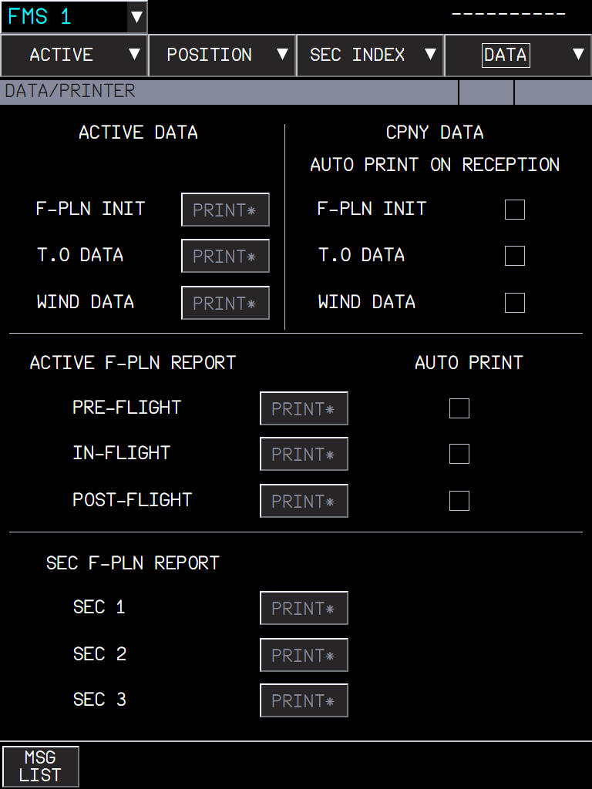
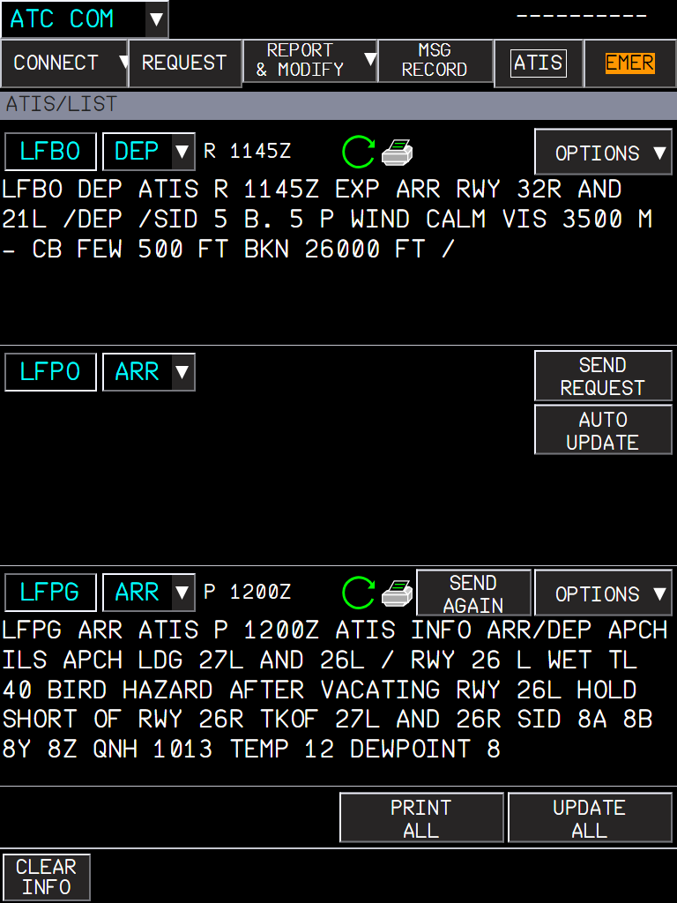
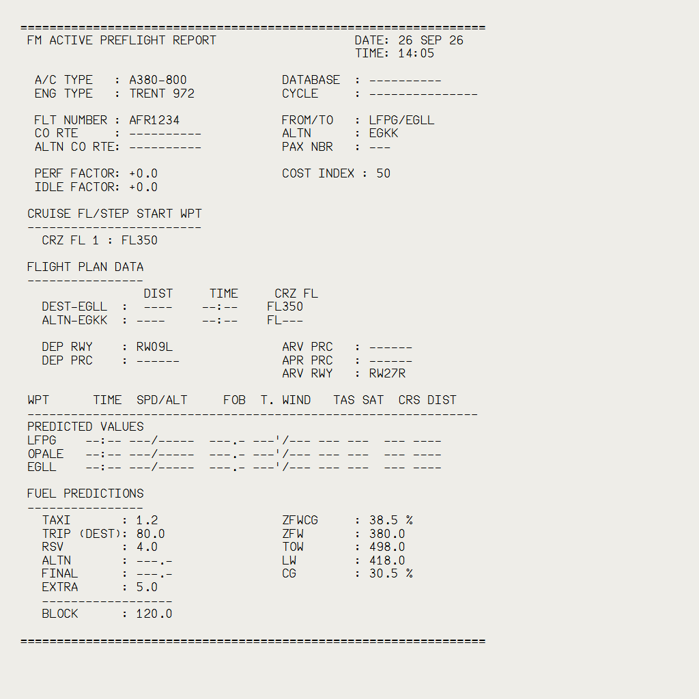
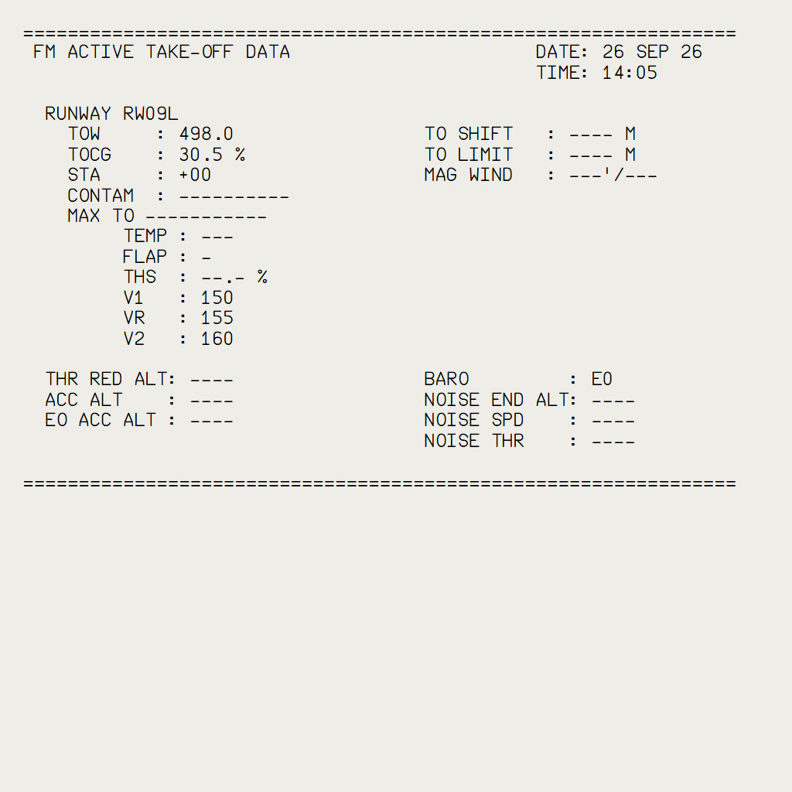
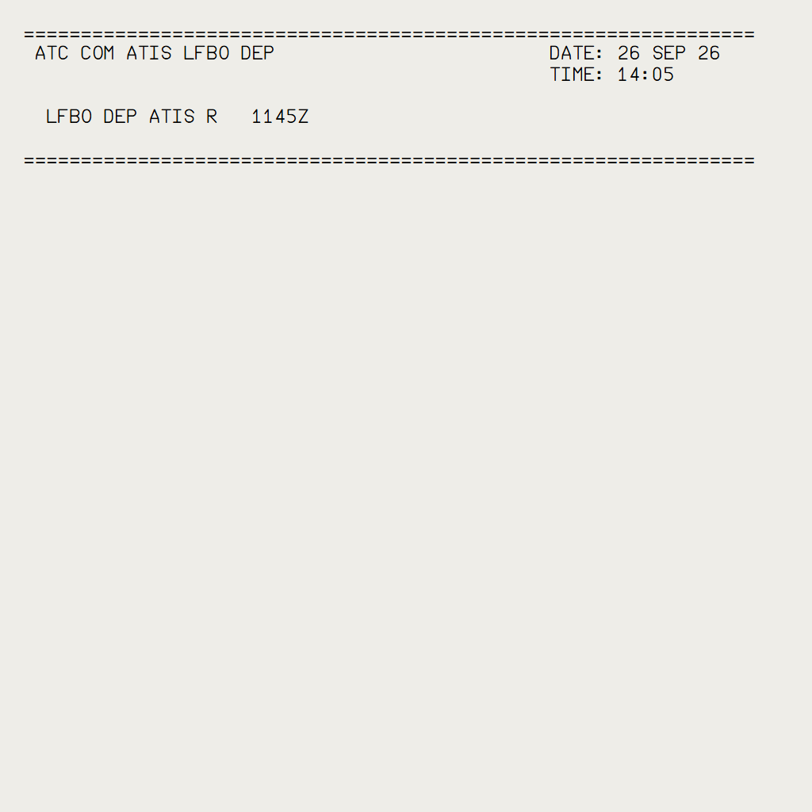

The A380X MFD and ATC COM print on the paper of the pedestal printer, whose buttons work, and both aircraft get a printer paper door and no torn paper stuck in the slit
AircraftA380X (printing, buttons) and A32NX (paper door, no torn paper edge)Where to find itPedestal printer; A380X MFD FMS > DATA > PRINTER, SEC INDEX, ATC COM ATIS and MSG RECORD; SD MAILBOX PRINTBranchcore/printer, based on core/a380x-atccom-datalink (stacked: needs core/surveillance, core/a380x-mfd-fms and core/a380x-atccom-datalink merged first). The 3D parts are in four aircraft-large-files companion changes: pedestal paper 36b4bd9, A380X door 27d6123, A380X ON light 8c14d21, A32NX door 99237fb (fork TCdr/aircraft-large-files).StatusFMS and ATIS printing: tested in the sim 2026-09-27, FMS print again 2026-10-02. Mailbox PRINT: OK 2026-10-02 (MSG RECORD print not sim-tested). Paper doors: A32NX OK 2026-10-01; A380X looked at during the work and committed at the user's request 2026-10-01. No torn paper edge: no sim test recorded. Printer buttons and ON light: OK 2026-10-03.PicturesMFD pages in the local browser harness (build installed in the sim); the paper sheets rendered by the printer page of the build, with the printouts of the unit tests (test flight plan LFPG - EGLL). No pictures for the doors, the slit and the buttons.
1. A380X pedestal printer: FMS pages and the ATIS on paper
2. A380X ATC COM print: SD mailbox and MSG RECORD
3. Printer paper door (A380X and A32NX)
4. No torn paper edge left in the printer slit
5. A380X printer control panel: ON/OFF, SLEW, TEST, ABORT
1. A380X pedestal printer: FMS pages and the ATIS on paper
Aircraft: A380X | Where: MFD FMS > DATA > PRINTER, SEC INDEX, ATC COM ATIS; pedestal printer | Status: Tested in the sim by the user with the paper added to the installed cockpit model (feed animation, tear-off, sheets on the pedestal and the CPT table, FMS pages and ATIS): OK (2026-09-27); FMS print again OK (2026-10-02). Unit tests: 26 FMS print + printer tests, ATIS print.
What it is for
The A380 has a printer on the pedestal. The FMS prints its data (initialization, takeoff, winds, flight reports) and the ATC COM prints the ATIS, so the crew has them on paper. The printer now works as on the FBW A320: the sheet comes out of the printer, you tear it off and read it.
Printing
From
What prints
FMS > DATA > PRINTER
F-PLN INIT, T.O DATA, WIND DATA; the active flight plan PRE-FLIGHT, IN-FLIGHT and POST-FLIGHT reports; the SEC 1 to 3 reports; the AUTO PRINT options (company data on reception, reports at engine start, takeoff and shutdown)
FMS > SEC INDEX
PRINT of a secondary flight plan
ATC COM > ATIS
PRINT of one ATIS, PRINT ALL (all the ATIS on one printout), and the auto print (printer icon) when an ATIS is received

Figure 1. FMS DATA / PRINTER: the PRINT buttons and the AUTO PRINT options.

Figure 2. ATC COM ATIS: the printer icon (auto print) and PRINT ALL.
The paper
Each printout starts with its title, the date and the time (UTC); an ATIS printout shows the time of the ATIS message.
A sheet holds 45 lines: a longer page (e.g. a flight report) comes out on several sheets, one after the other.
Click the sheet in the printer to tear it off: it goes on the pedestal (or the captain's pull-out table), where you can page through the torn sheets and discard them, as on the A320.

Figure 3. FM ACTIVE PREFLIGHT REPORT.

Figure 4. FM ACTIVE TAKE-OFF DATA.

Figure 5. ATC COM ATIS printout.
Limitations and why
Limitation
Why
The paper needs the aircraft-large-files companion
the FBW A380 cockpit model has no paper nodes: they are in the aircraft-large-files companion pedestal printer paper (36b4bd9 on the fork TCdr/aircraft-large-files). Without it the printouts still reach the flyPad Printouts page
The paper looks like the A320 one
the paper, its animation and its buttons come from the A320 printer
How to use
Printer powered (AC 1) and ON (green window on the printer control panel).
MFD FMS > DATA > PRINTER: press the PRINT of the page or report; or SEC INDEX > PRINT; or ATC COM > ATIS: PRINT (OPTIONS menu), PRINT ALL, or the printer icon for the auto print.
Watch the sheet come out of the printer, click it to tear it off.
Read the torn sheets on the pedestal (or the CPT pull-out table when it is out): page through them, discard them.
How to test
#
Do this
Expected result
1
A380X with the paper companion model installed, on the ground, AC power, flight plan entered (e.g. LFPG - EGLL). MFD FMS > DATA > PRINTER: press PRINT for F-PLN INIT.
A sheet comes out of the printer slit: title, date and UTC time, then the page in 64 columns; no characters cut at the right edge.
2
Print a long report (PRE-FLIGHT report).
Several sheets of 45 lines, one after the other (about 2.5 s apart).
3
Click the sheet in the printer.
It is torn off and lies on the pedestal beside the printer; the page buttons page through the torn sheets; discard removes them.
4
Pull out the CPT table, print again and tear the sheet off.
The sheet lies on the table and slides aft with the meal table.
5
ATC COM > ATIS with an ATIS received: OPTIONS > PRINT, then PRINT ALL with two areas filled.
PRINT: the ATIS of that area, with the time written in the ATIS. PRINT ALL: all the ATIS on ONE printout, one after the other.
6
Tick the printer icon (AUTO PRINT) of an area and wait for a new ATIS version.
The new version prints when it is received.
7
MFD FMS > SEC INDEX: PRINT of a secondary flight plan.
The SEC report prints.
2. A380X ATC COM print: SD mailbox and MSG RECORD
Aircraft: A380X | Where: SD MAILBOX PRINT; MFD ATC COM > MSG RECORD | Status: Mailbox PRINT tested in the sim by the user (a route clearance printed): OK (2026-10-02). MSG RECORD PRINT ALL / PRINT not sim-tested (unit tests).
What it is for
The FCOM lets the crew print an ATC message from the mailbox (DSC-46-10-20-60) and the message record from the MFD (DSC-46-10-20-30 P 29, DSC-46-10-40 P 30). These buttons said PRINTER NOT AVAIL; they now print on the pedestal printer, through the same queue as the FMS prints.
What you see
From
What prints
Printout title
SD MAILBOX: PRINT
The message displayed in the mailbox; PRINTING in the information area while it prints
ATC COM MAILBOX
MFD ATC COM > MSG RECORD (list): PRINT ALL
All the recorded messages: for each one its time, direction, station and status, then its text, in 64 columns
ATC COM MSG RECORD
MFD ATC COM > MSG RECORD (zoom): PRINT
The message shown in the zoom
ATC COM MSG RECORD
A stray closing brace at the end of the printed CPDLC text is gone. With the printer off or unpowered, the buttons show PRINTER NOT AVAIL (see the printer buttons below).
How to use
SD mailbox: with the message displayed, press PRINT.
MFD ATC COM > MSG RECORD: PRINT ALL for the whole record, or ZOOM a message and PRINT it.
Tear the sheet off the pedestal printer as for any printout.
How to test
#
Do this
Expected result
1
A380X, datalink connected, printer ON. Receive an uplink (a live controller, or the self-sent route clearance of core/a380x-atccom-datalink). Press PRINT in the SD mailbox.
PRINTING in the mailbox information area; a sheet titled ATC COM MAILBOX with the message comes out of the printer, without a } at the end.
2
Close a few dialogues, open MFD ATC COM > MSG RECORD, press PRINT ALL.
One printout ATC COM MSG RECORD: each message with its time, direction, station and status, then its text.
3
ZOOM one message and press PRINT.
A printout of that message only.
4
Set the printer OFF (ON/OFF button) and press PRINT again.
PRINTER NOT AVAIL; nothing prints.
3. Printer paper door (A380X and A32NX)
Aircraft: A32NX and A380X | Where: Pedestal printer: paper door and its latch / handle | Status: A32NX: tested in the sim by the user, OK (2026-10-01). A380X: looked at in the sim during the work (2026-10-01) and committed at the user's request after the model crash fix; no separate test record of the final version.
What it is for
Neither cockpit model had an animated printer door. A click on the paper door (or its latch on the A380X, its handle on the A32NX) now opens or closes it: the door swings up about its forward edge and shows the paper roll and the roller unit under the slit. The A320 FCOM has a PRINTER DOOR LATCH (DSC-45-30); the A380 FCOM does not describe the door: its look and travel are design choices. Opening the door has no effect on printing.
What you see
Situation
What you should see
Click on the closed door (or latch / handle)
The door swings up (about 80 degrees on the A380X): paper roll, roller unit and the paper going up into the slit.
Click again
The door closes.
Printing with the door open (A380X)
The sheet still comes out of the slit; its lower part shows in the open compartment.
Limitations and why
Limitation
Why
What to do
Needs the aircraft-large-files companion models.
The door parts, the compartment and the mechanism are in the cockpit models: A380X 27d6123 (on the pedestal paper 36b4bd9), A32NX 99237fb.
Install them with this branch; a full MSFS restart is needed after a model change.
How to use
Click the printer paper door (or its latch / handle) to open it; click again to close it.
How to test
#
Do this
Expected result
1
A380X with the companion models installed (MSFS restarted). Click the printer paper door on the pedestal.
The door swings up about its forward edge; paper roll and roller unit visible; variable L:A380X_PRINTER_DOOR = 1.
2
Click the latch.
The door closes (variable back to 0).
3
Print an FMS page with the door open.
Printing works as with the door closed.
4
A32NX with its companion model installed. Click the printer door, then its handle.
The door opens, then closes (L:A32NX_PRINTER_DOOR).
4. No torn paper edge left in the printer slit
Aircraft: A32NX and A380X | Where: Pedestal printer slit | Status: No sim test recorded (behaviour change only).
What it is for
The torn paper edge of the FBW printer (the PRINT_TORN part) stood in the slit whenever the printer was not printing: it looked like a sheet stuck in the printer. It is no longer shown on either aircraft: paper only comes out of the slit while printing.
What you should see
Situation
What you should see
Printer idle
Empty slit, no paper strip.
Printing
The sheet comes out of the slit as before; once torn off, the slit is empty again.
How to use
Nothing to set: print and tear off sheets as usual.
How to test
#
Do this
Expected result
1
A32NX cold and dark, look at the pedestal printer.
No paper strip in the slit.
2
Print a page (e.g. MCDU or flyPad print), tear the sheet off.
The sheet comes out while printing; after the tear-off the slit is empty.
3
Same on the A380X (print an FMS page from MFD DATA > PRINTER).
Empty slit before and after the print.
5. A380X printer control panel: ON/OFF, SLEW, TEST, ABORT
Aircraft: A380X | Where: Pedestal printer control panel | Status: Tested in the sim by the user: OK (2026-10-03), the green ON window after the emissive fix of the companion model. Unit tests: PedestalPrinter.spec.ts, FmsPrinter.spec.ts.
What it is for
The A380 cockpit model has the printer control panel (ON/OFF with a green window, SLEW, TEST, ABORT), but nothing was clickable. The printer is supplied by AC 1 (FCOM DSC-46-20-70). The A380 FCOM does not describe the buttons: SLEW, TEST and ABORT follow the usual printer functions (design choices).
What you see
Button
What it does
ON/OFF
Switches the printer on or off. The green window shows while the printer is on and AC 1 is powered. Off or unpowered: an FMS print shows PRINTER NOT AVAIL (type II, FCOM DSC-22-FMS-20-110) and nothing prints; the ATC COM prints show their PRINTER NOT AVAIL.
SLEW
Feeds out one blank sheet.
TEST
Prints the test page: PRINTER TEST, date and time, lines of the character set, END OF TEST.
ABORT
Drops the sheets waiting to be printed.
Limitations and why
Limitation
Why
What to do
The green window needs the aircraft-large-files companion.
Its emissive material is in the companion change 8c14d21 (on the door 27d6123).
Install it; restart MSFS.
No buttons on the A32NX printer.
The A32NX model has no printer button parts (the FCOM SLEW switch, DSC-45-30): it needs model work.
-
How to use
Keep the printer ON (green window) to print.
SLEW to feed a blank sheet, TEST to check the printer, ABORT to cancel a long printout.
How to test
#
Do this
Expected result
1
A380X with the companion models installed, cold and dark. Look at the printer control panel.
Green window off.
2
Switch the batteries and AC power on (AC 1 powered).
Green window on.
3
Press ON/OFF.
Green window off (L:A380X_PRINTER_OFF = 1).
4
MFD FMS > DATA > PRINTER: PRINT F-PLN INIT.
MFD message PRINTER NOT AVAIL; no sheet.
5
Press ON/OFF again, then TEST.
Green window on; the test page prints: PRINTER TEST with the date and time, the character lines, END OF TEST.
6
Press SLEW.
One blank sheet comes out.
7
Print a long report (PRE-FLIGHT) and press ABORT after the first sheet.